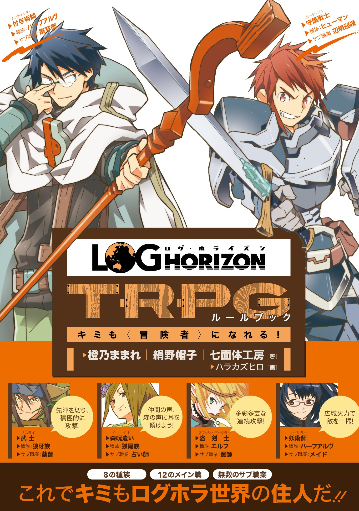

TRPGとは
テーブルトーク・ロールプレイングゲームの略。ゲーム機を使わず紙と鉛筆、サイコロを使い、
参加者と会話をしながら進行の主軸となるシナリオ（ビデオゲームで言う物語のこと）を楽しみます。
TRPGには様々な種類があり、プレイするにはそのタイトルのルールブックが必要です。
今回はルールブックを多数紹介しようと思います。
クトゥルフ神話TRPG
アメリカのゲーム会社であるChaosium社が製作したクトゥルフ神話の世界観を体験するホラーTRPGです。
このタイトルの特徴としては
・プレイヤーキャラクターであるところの「探索者」たちは、せいぜい常人より少し専門的な知識を得ている一般人に過ぎない。
・対して、脅威となりうる「神話的存在」は正面から立ち向かって打倒できるような相手ではない。
・むしろ、直視しただけで「宇宙的恐怖」から発狂してしまうようなおぞましくも強大な相手なのである。
・また他のゲームより個々のキャラクターがわりと簡単に死んでしまう。
このようにクトゥルフ神話TRPGは、矮小な人間である探索者たちが、様々な宇宙的恐怖に晒されつつも生き残ることを目的として足掻く様を楽しむホラーTRPGとなってます。
アリアンロッドRPG2E
2005年に発売された菊池たけしのオリジナルTRPG第3作『アリアンロッドRPG』のルール第二版に当たる。
『アリアンロッド』の世界はスタンダードな「中世ヨーロッパ風もしくは近世東アジア風の剣と魔法のファンタジー世界」ではある世界「エリンディル大陸」、プレイヤーはこの世界の冒険者となって
ある時は山賊団を退治し、ある時は宝を求めてダンジョンに潜り、ある時は世界の危機を救うために妖魔達と戦います。
自分の村を、町を発展させるために交易路を開いていくも良し、まだ見ぬ強敵を求めて秘境に分け入るも良し、軍勢を率いて国を興すも良し、
武器防具の素材となるモンスターの生体素材を求めてモンスターハントに精を出すのも良し！
バックグラウンドとなる物語はちょっと重ためですが、別に毎回毎回世界の危機に立ち向かう必要はないＴＲＰＧです。
さあ、新たな冒険がキミを待っている!
ログ・ホライズンTRPG

| ジャガイモ | 3個 |
|---|
| ニンジン | 1本 |
|---|
| 豚ブロック | 300g |
|---|
| カレー粉 | 1箱 |
|---|